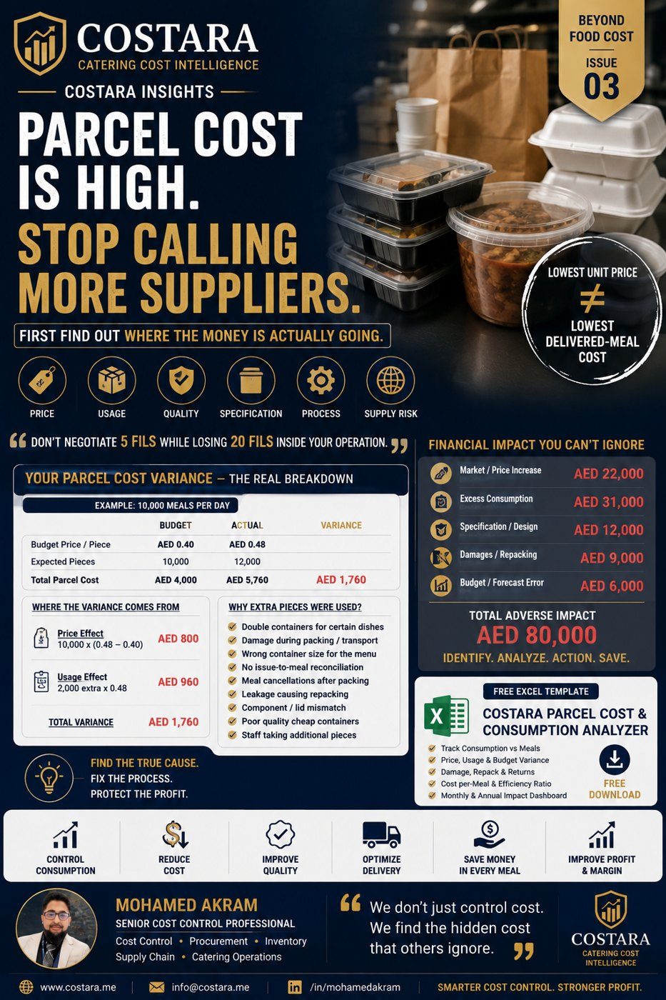
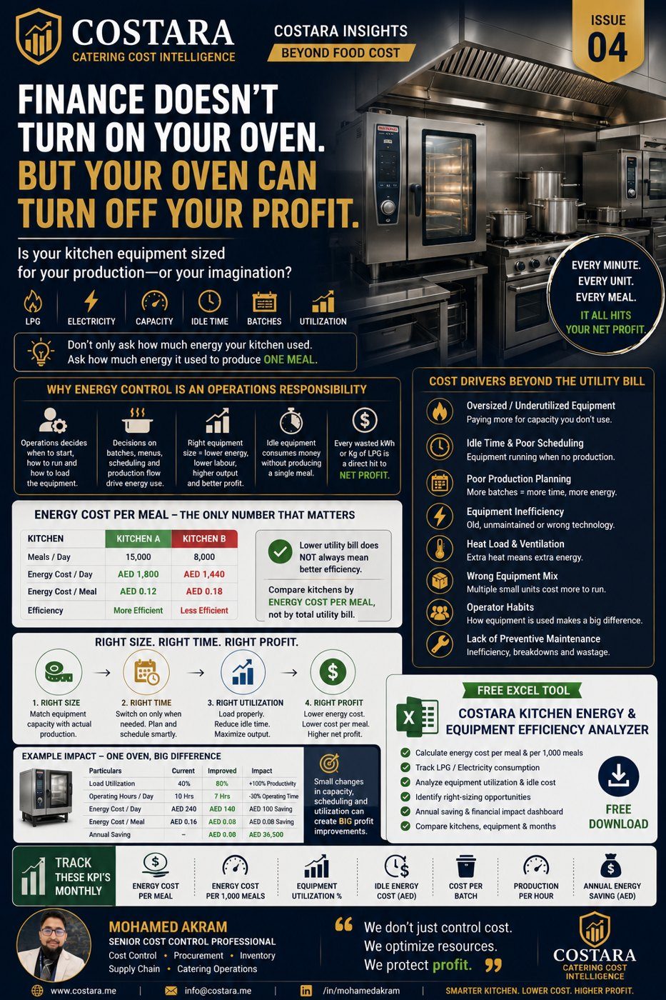
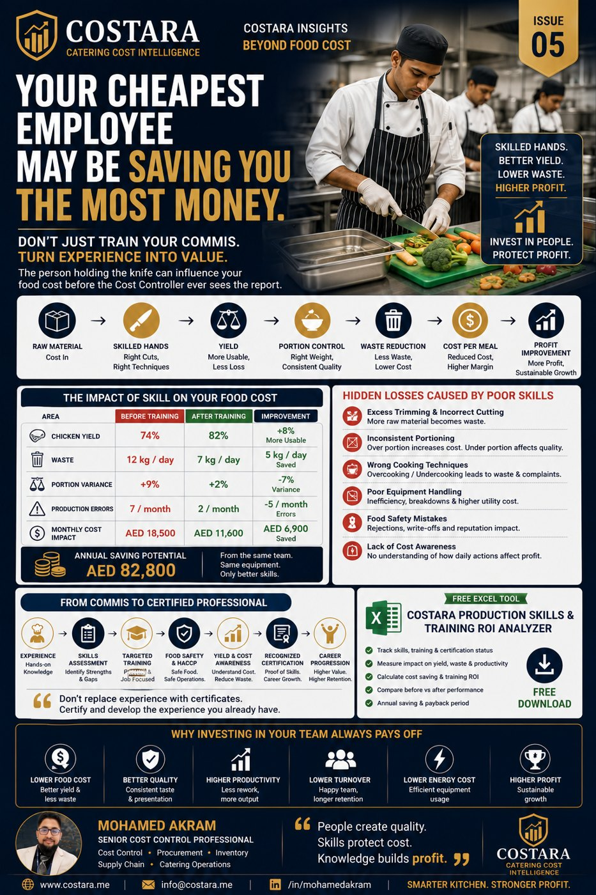
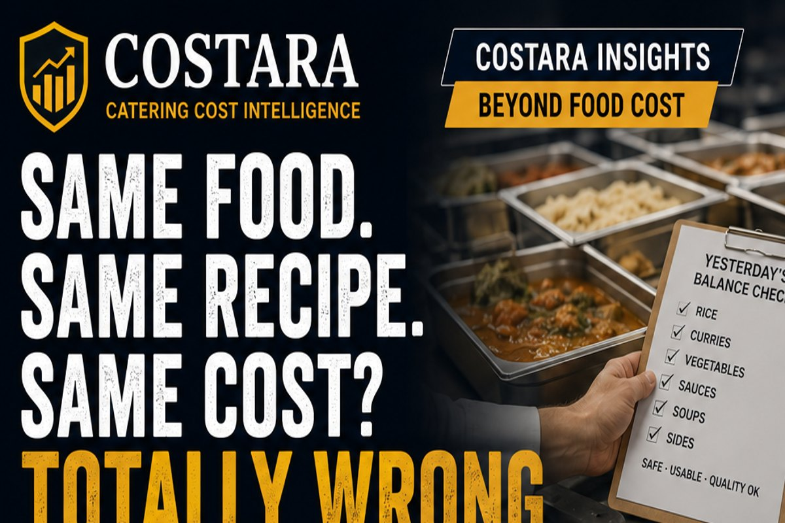
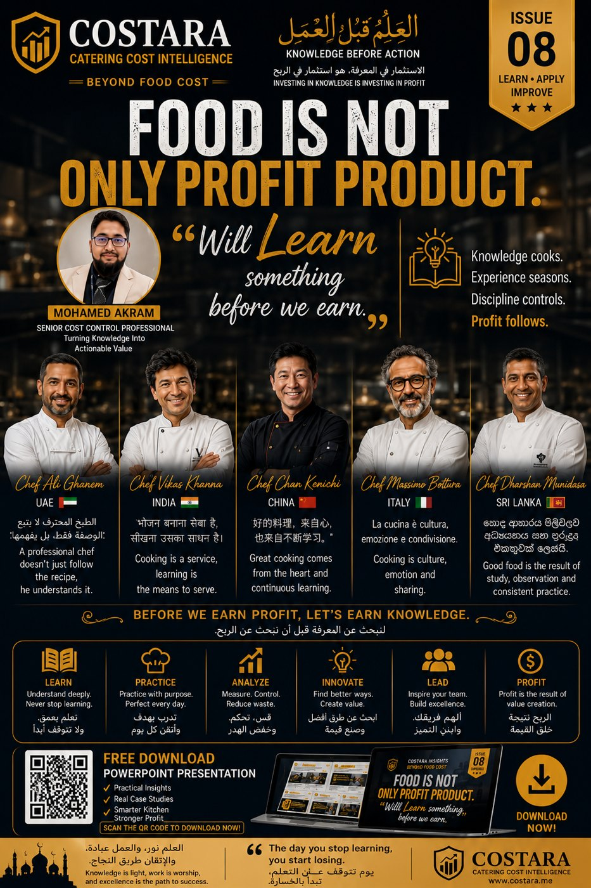
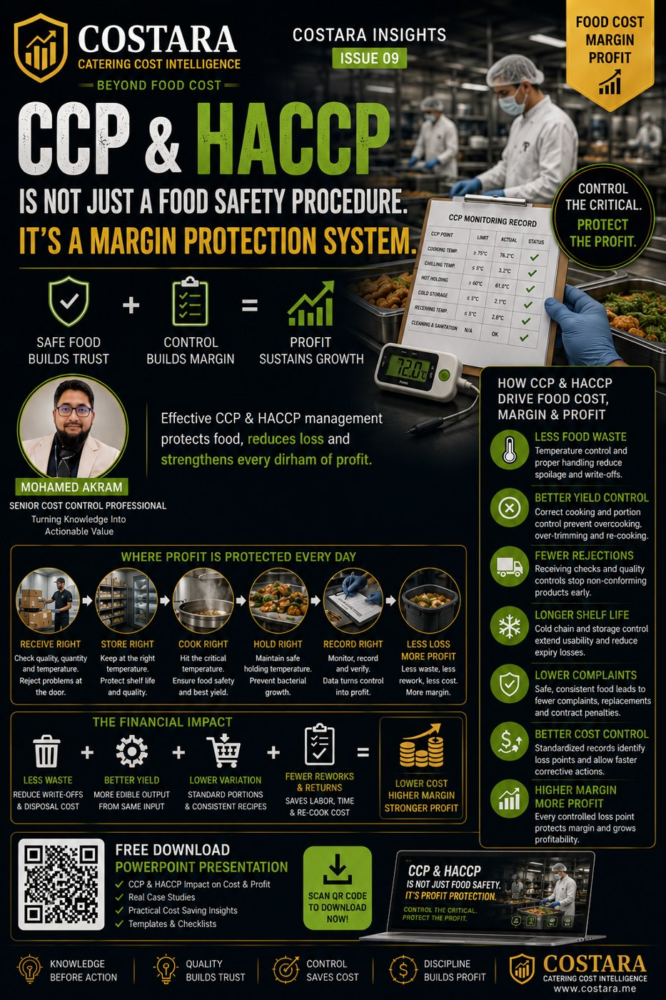

Issue 01 • Logistics
The Hidden Cost of Catering Distribution
Your food cost may be under control — but is your delivery model eating your profit?
Open IssuePractical experience across large-scale catering cost control, food costing, inventory, menu costing, procurement, supply chain, audit, logistics and operational profitability.
Dedicated practical pages for the subjects catering and foodservice professionals search most often.
Nine practical issues connecting catering operations to cost, margin and profit. Each issue includes a free PowerPoint presentation.
Your food cost may be under control — but is your delivery model eating your profit?
Open Issue
Do not start with the bin. Trace where the value was lost.
Open Issue
Lowest unit price is not always the lowest delivered-meal cost.
Open Issue
Finance does not turn on your oven — but your oven can turn off your profit.
Open Issue
The person holding the knife can influence food cost before the report is generated.
Open Issue
The cheapest kitchen is the one that delivers safely, on time, at the lowest total cost.
Open Issue
Before you cook today, count what yesterday safely left behind.
Open Issue

CCP & HACCP is not only food safety — it is profit protection.
Open IssueJoin professionals interested in Cost Control, Food Costing, Inventory, Procurement, Supply Chain, Catering Operations and active job opportunities across the UAE, GCC and selected international markets.

Practical paid advisory for catering companies, restaurants, coffee shops, central kitchens and food production operations.
Food, non-food, waste and cost-per-meal leakage.
Physical/book variance and root-cause reconciliation.
Recipe, yield, portion, margin and menu profitability.
Supplier price, specification and alternative sourcing review.
Purchasing, receiving, storage and operational control.
Routes, delivery frequency and cost per delivered meal.